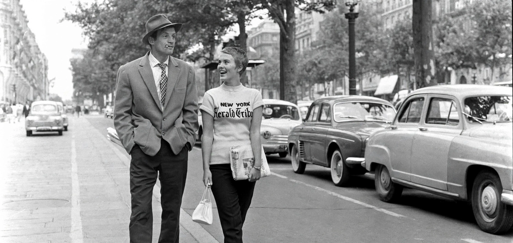

French New Wave
From Wikipedia, the free encyclopedia

The French New Wave (Nouvelle Vague) was a French film movement of the late 1950s and 1960s in which young critics-turned-directors — including Jean-Luc Godard, François Truffaut, Éric Rohmer, Claude Chabrol and Jacques Rivette — rejected the polished 'Tradition of Quality' studio cinema in favour of location shooting, lightweight cameras, improvised dialogue and self-conscious editing.
Origins
The movement grew out of the journal Cahiers du Cinéma, founded in 1951 by André Bazin, whose critics championed auteur directors such as Alfred Hitchcock and Howard Hawks. Truffaut's 1954 polemic 'A Certain Tendency of the French Cinema' attacked literary, studio-bound filmmaking. Cheap cameras, fast film stock and the example of Italian neorealism made low-budget location production feasible.
Key films
Chabrol's Le Beau Serge (1958) is often counted the first New Wave feature; the breakthrough year was 1959, with Truffaut's The 400 Blows and Alain Resnais's Hiroshima mon amour. Godard's Breathless (1960), with its jump cuts and fourth-wall breaks, became the movement's emblem. Agnès Varda — associated with the related 'Left Bank' group — directed Cléo from 5 to 7 (1962).
Influence
The New Wave transformed world cinema: it influenced the New Hollywood directors of the 1970s, the Danish Dogme 95 movement decades later, and independent filmmaking generally, legitimising the director as author and the personal, low-budget feature as an art form.